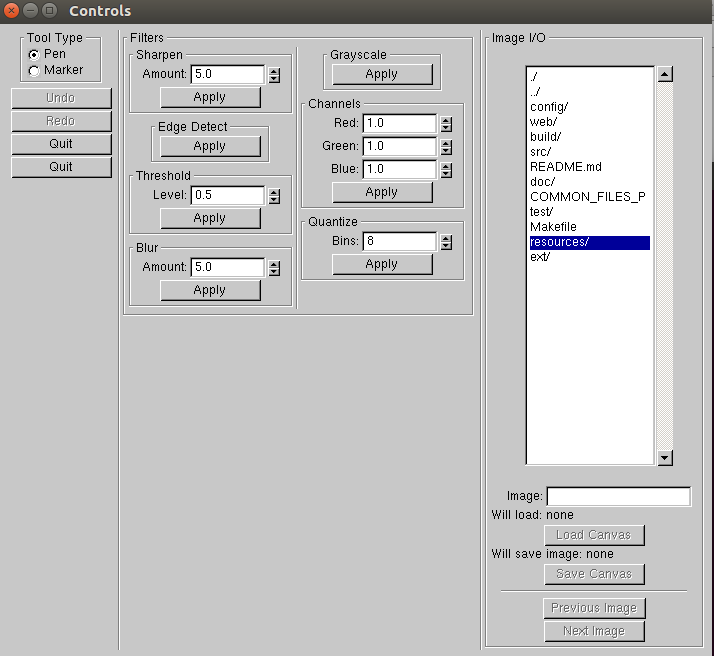
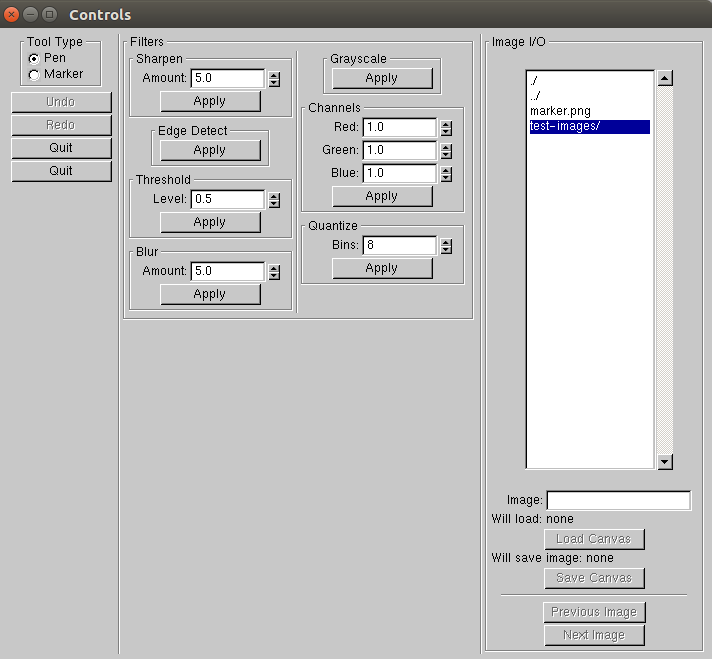
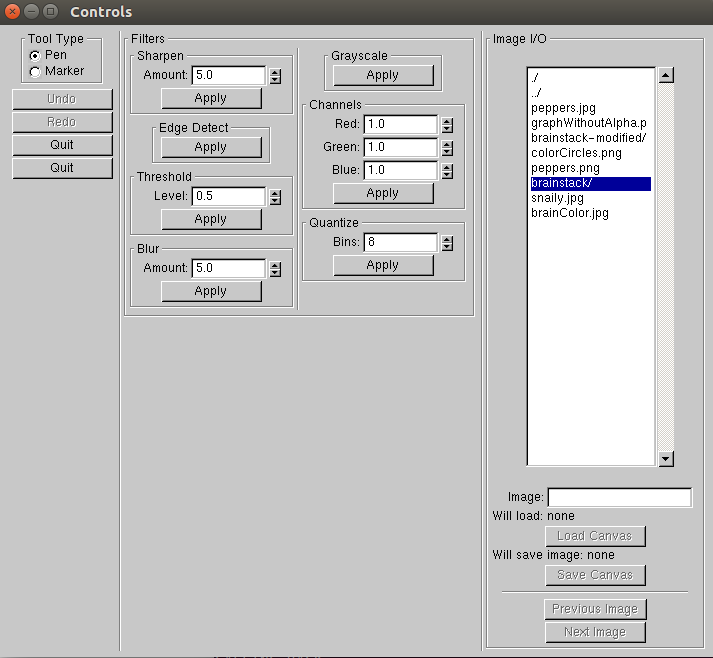
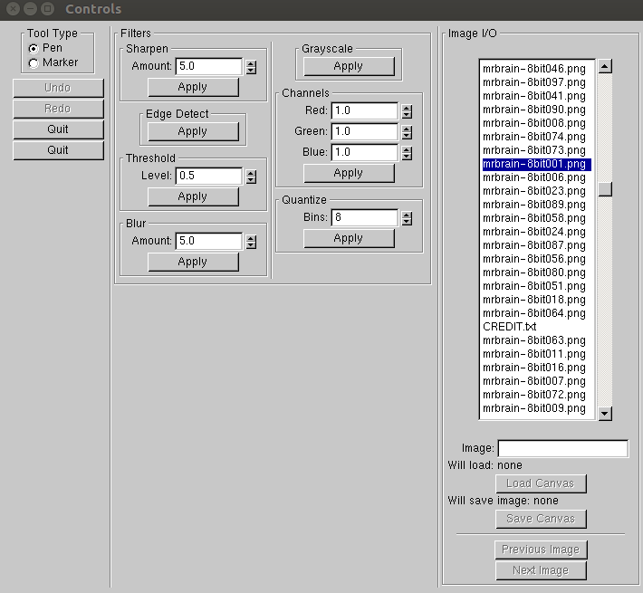

First cd into your directory that holds Iteration3. This will be different for every person. Go to the
cd /home/padil031/CSCI3081/group-repo/project/iteration3/
./build/MIA/bin/MIA
Under the section called Image I/O follow navigate to CT scans, Then pick the first one chronilogically. For us this mrbrain-8bit001.png
   First cd into your directory that holds Iteration3. This will be different for every person. Go to the
cd /home/padil031/CSCI3081/group-repo/project/iteration3/
After in the directory you will be ready to run the command to modify the CT scans. Note: Remember that the output directory for the modified scans must exist. If you have not made the directory simply run mkdir <path/dirname>. The command will take form of: ./build/MIA/bin/MIA <path to scan dir><scan name - ending numbers>###.<file extension> -blur <amount to blur> -quantize 4 <path to scan output directory><output scan name - ending numbers>###.<file extension>
./build/MIA/bin/MIA resources/test-images/brainstack/mrbrain-8bit###.png -blur 5.0 -quantize 4 resources/test-images/brainstack-modified/mrbrain-8bit### .png